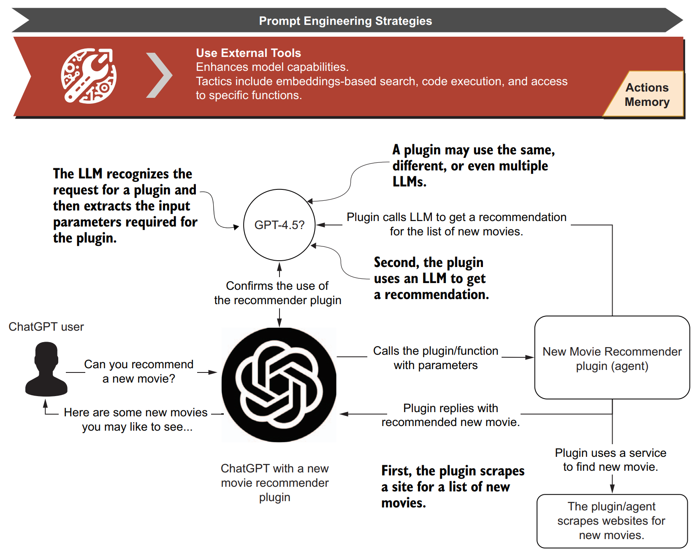
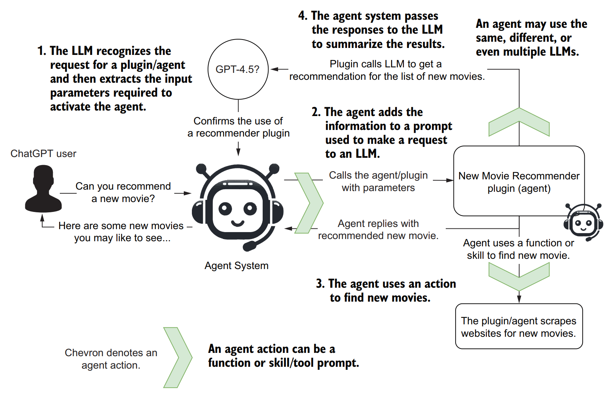
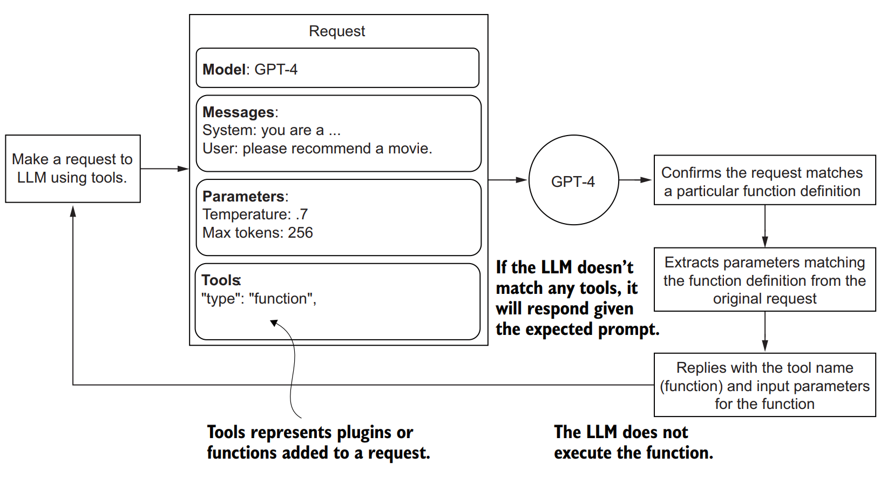
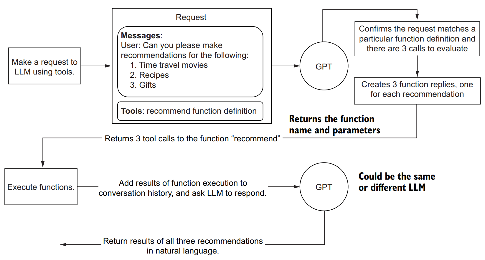

2. Tools với AI Agent#
2.1. Giới thiệu#
Với LLM thông thường, ta chỉ có thể tương tác trực tiếp với mô hình đã được huấn luyện mà không có khả năng thực hiện nhiệm vụ. Để khắc phục nhược điểm này, agent cần được tương tác với các công cụ nằm ngoài LLM để có thể thực hiện tác vụ cụ thể.
Xem ví dụ về quy trình tương tác giữa LLM và các công cụ bên ngoài với yêu cầu tìm kiếm thông tin một bộ phim của ChatGPT


2.2. Ví dụ với OpenAI#
2.2.1. Đơn tác vụ#
Khi sử dụng LLM với khả năng tương tác với các công cụ bên ngoài (tools/ actions), LLM sẽ thực hiện các tác vụ với sơ đồ và các bộ tham số bao gồm:
Model: Mô hình LLM cụ thể - ví dụ ChatGPT 3.5 turbo, Llama 7B,...
Messages: Prompt & hướng dẫn về system prompt
Parameters: Các bộ tham số của agent như temperature, max tokens
Tools: Công cụ cho phép thương tác với bên ngoài - ví dụ: hàm, api call

Ta có thể xây dựng một tool cho phép trả ra tool cần thiết để thực hiện nhiệm vụ mà người dùng yêu cầu.
import os
from openai import OpenAI
from dotenv import load_dotenv
# Load API key from .env file
load_dotenv()
api_key = os.getenv('OPENAI_API_KEY')
# Ensure the API key is available
if not api_key:
raise ValueError("No API key found. Please check your .env file.")
client = OpenAI(api_key=api_key)
# Example function to query ChatGPT
def ask_chatgpt(user_message):
response = client.chat.completions.create(
model="gpt-4o", # gpt-4 turbo or a model of your preference
messages=[{"role": "system", "content": "You are a helpful assistant."},
{"role": "user", "content": user_message}],
temperature=0.7,
tools=[
{
"type": "function",
"function": {
"name": "recommend",
"description": "Provide a recommendation for any topic.",
"parameters": {
"type": "object",
"properties": {
"topic": {
"type": "string",
"description": "The topic, a user wants a recommnedation for.",
},
"rating": {
"type": "string",
"description": "The rating this recommendation was given.",
"enum": ["good", "bad", "terrible"]
},
},
"required": ["topic"],
},
},
}
]
)
return response.choices[0].message.tool_calls[0].function
# Example usage
user = "Can you please recommend me a time travel movie?"
response = ask_chatgpt(user)
print(response)
# Example usage with a different user input
user = "Can you please recommend me a good fiction book to read?"
response = ask_chatgpt(user)
print(response)
Function(arguments='{"topic":"time travel movie"}', name='recommend')
Function(arguments='{"topic":"fiction book","rating":"good"}', name='recommend')
Trong bước trên, hàm KHÔNG thực sự chạy mà chỉ trả ra loại actions và các tham số cần thiết để thực hiện tác vụ mà thôi.
2.2.2. Đa tác vụ#
Tương tự như hàm trên, ta có thể xây dựng cùng lúc nhiều hàm khác nhau để thực hiện các tác vụ khác nhau mà người dùng yêu cầu.

Ví dụ cho phép thực hiện đa tác vụ
from openai import OpenAI
import json
from dotenv import load_dotenv
load_dotenv()
client = OpenAI()
def recommend(topic, rating="good"):
"""Give a recommendation for any topic"""
if "time travel" in topic.lower():
return json.dumps({"topic": "time travel",
"recommendation": "Back to the Future",
"rating": rating})
elif "recipe" in topic.lower():
return json.dumps({"topic": "recipe",
"recommendation": "The best thing you ever ate.",
"rating": rating})
elif "gift" in topic.lower():
return json.dumps({"topic": "gift",
"recommendation": "A glorius new...",
"rating": rating})
else:
return json.dumps({"topic": topic,
"recommendation": "unknown"})
def run_conversation():
# Step 1: send the conversation and available functions to the model
user = """Can you please make recommendations for the following:
1. Time travel movies
2. Recipes
3. Gifts"""
messages = [{"role": "user", "content": user}]
tools = [
{
"type": "function",
"function": {
"name": "recommend",
"description": "Provide a recommendation for any topic.",
"parameters": {
"type": "object",
"properties": {
"topic": {
"type": "string",
"description": "The topic, a user wants a recommnedation for.",
},
"rating": {
"type": "string",
"description": "The rating this recommendation was given.",
"enum": ["good", "bad", "terrible"]
},
},
"required": ["topic"],
},
},
}
]
response = client.chat.completions.create(
model="gpt-3.5-turbo-1106",
messages=messages,
tools=tools,
tool_choice="auto", # auto is default, but we'll be explicit
)
response_message = response.choices[0].message
tool_calls = response_message.tool_calls
# Step 2: check if the model wanted to call a function
if tool_calls:
# Step 3: call the function
# Note: the JSON response may not always be valid; be sure to handle errors
available_functions = {
"recommend": recommend,
} # only one function in this example, but you can have multiple
messages.append(response_message) # extend conversation with assistant's reply
# Step 4: send the info for each function call and function response to the model
for tool_call in tool_calls:
function_name = tool_call.function.name
function_to_call = available_functions[function_name]
function_args = json.loads(tool_call.function.arguments)
function_response = function_to_call(
topic=function_args.get("topic"),
rating=function_args.get("rating"),
)
messages.append(
{
"tool_call_id": tool_call.id,
"role": "tool",
"name": function_name,
"content": function_response,
}
) # extend conversation with function response
second_response = client.chat.completions.create(
model="gpt-3.5-turbo-1106",
messages=messages,
) # get a new response from the model where it can see the function response
return second_response.choices[0].message.content
# Thực hiện tác vụ
print(run_conversation())
Based on your request, here are some recommendations:
1. Time travel movies: "Back to the Future"
2. Recipes: "The best thing you ever ate."
3. Gifts: "A glorious new..." (Unfortunately, the full recommendation is not provided)
I hope you find these recommendations helpful!